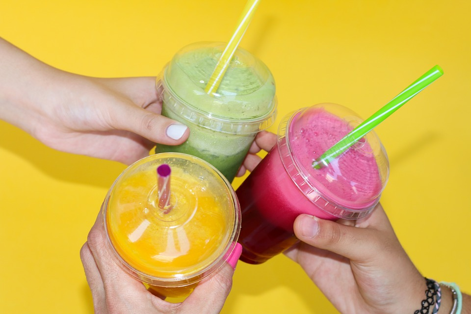

Pijalnia? Do niedawna łączyliśmy ją tylko z piwem. Dziś jednak w pijalni można napić się czegoś o wiele zdrowszego. Pijalnia soków, bo o niej mowa, to rodzaj baru, który powstał jako odpowiedź na potrzeby społeczne i zapotrzebowanie rynku. Latem to zapotrzebowanie wzrasta, bo wzrasta temperatura na zewnątrz. W takich warunkach chętniej pijamy orzeźwiające, kolorowe soki i warzywno-owocowe koktajle. Jak sokowy trend wykorzystać na rzecz rozwoju swojego biznesu?
Pijalnie soków najbardziej znane są na Wyspach Brytyjskich, gdzie funkcjonują pod nazwami juice bar i green bar. Sam koncept nie wydaje się czymś odkrywczym. Soki serwuje się przecież w większości restauracji, barów, nawet kawiarni. Juice bar się w nich specjalizuje. Repertuar serwowanych napojów jest dość wąski, ale za to receptury są doskonale dopracowane. Tu wszystko robi się pod dyktando zdrowia i jakości – nikt nie idzie na skróty, podając soki z kartonu i dosypując do koktajli ton cukru.
Bo w smoothies i koktajlach znaczenie ma nie tylko smak, ale i wartości odżywcze. Zdarza się, że pijalnię soków hobbystycznie prowadzi osoba z wykształceniem dietetycznym bądź nawet technolog żywienia, dzięki czemu z poczuciem pełnego bezpieczeństwa mogą ją odwiedzać osoby będące na diecie: odchudzającej, bezmlecznej, wegańskiej, bezglutenowej itp. Każdy znajdzie coś dla siebie!
W dobrej jakości juice barze menu skonstruowane jest nie tylko ze względu na smaki i składniki, ale też ze względu na wspomniane wyżej właściwości zdrowotne. I tak, znajdziemy w nim soki regeneracyjne, koktajle odchudzające, smoothies detoksykacyjne, antystresowe i wiele innych. Osoby wyznające zasady zdrowego stylu życia pijalnie soków odwiedzają regularne, traktując jako niezbędny składnik zdrowej rutyny. Takich osób jest w naszym społeczeństwie coraz więcej, gracze na rynku gastronomicznym muszą być tego świadomi.
Dlaczego klienci odwiedzają pijalnie, zamiast przyrządzać koktajle w domu?
Teoretycznie soki, smoothies i koktajle to żadne skomplikowane dania, których nie można by przygotować sobie samemu w domu. A jednak wśród klientów zapotrzebowanie na nie jest ogromne! Do przygotowania smoothie i koktajlu potrzeba blendera. I to dość dobrej jakości, inaczej będziemy skazani tylko na banany, kiwi, truskawki, to, co łatwo poddaje się blendowaniu. Tymczasem koktajle dają o wiele więcej możliwości! Jarmuż, seler naciowy, jabłko, dynia – żeby zamienić je w gęsty, idealnie gładki napój, potrzeba sprzętu o większej mocy. Nie wspominając o dodatkach jakich jak płatki owsiane czy migdały. A świeżo wyciskany sok? Do tego potrzeba już co najmniej sokowirówki, a najlepiej wyciskarki (która pozawala efektywniej wykorzystać owoce i warzywa, dzięki czemu sok ma wyższą wartość odżywczą), a to już gastronomiczne urządzenia z wyższej półki cenowej. Brak odpowiednich urządzeń, jak blender, mikser i wyciskarka to podstawowy powód, dla którego nie robimy koktajli samodzielnie w domu.
Poza tym po prostu brakuje nam na to czasu. Na co dzień poświęcamy się głównie przygotowywaniu podstawowych posiłków. W końcu sok to tylko dodatek do śniadania czy obiadu. Zamówiony w barze koktajl jest tak prosty, taki banalny, ale przy tym i bezpretensjonalny. Spotkanie z przyjacielem w pijalni jest niezobowiązujące, lekkie, przyjemne. Ma charakter codzienny, zupełnie inny wizyta w kawiarni. Każdemu z nas potrzeba czasem takiej świeżości.
Z drugiej strony przygotowanie koktajlu albo smoothie to także sztuka. Barman musi mieć sporo umiejętności, wyobraźni i poczucia smaku, które pozwolą mu wymyślać kolejne ciekawe połączenia smakowe. Największym powodzeniem cieszą się bowiem te pijalnie, które serwują napoje niecodzienne, czasem nawet lekko kontrowersyjne. O takich miejscach się mówi, takie miejsca klienci sobie polecają!
W związku z nieformalnym charakterem pijalni obowiązujący w niej cennik nie może straszyć wygórowanymi cenami. Koszt poszczególnych pozycji powinien być adekwatny do jakości wykorzystywanych surowców, pamiętajmy, że serwujemy soki i koktajle, nie owoce morza, klient nie będzie chciał więc płacić tylko za to, że lokal podpisuje się hasłami „fit” i „vege”. Oferta musi być skrojona na każdą kieszeń, bo grupą docelową tego typu gastronomii są także nastolatki i studenci.

Czego potrzeba, by uruchomić juice bar? Sprzęt, wystrój, lokal
Sam lokal może być naprawdę malutki (spotkania „na sok” są raczej szybkie, a więc wymiana klientów też postępuje dość szybko), za to dobrze, jeśli znajduje się w sprzyjającej lokalizacji, raczej w centrum miasta, w pobliżu biurowców. Logo i wystrój lokalu powinny odznaczać się optymizmem, kolorem, świeżością. Oczywiście centralnym punktem jest tu bufet, lada, na której piętrzą się przyciągające wzrok świeże warzywa i owoce, a także witryny chłodnicze, w których wyeksponować można gotowe napoje i koktajle. Potrzebne będą ponadto przeszklona lodówka barowa, chłodziarka, zamrażarka, kostkarka do lodu, szklane naczynia i akcesoria barmańskie oraz oczywiście wspomniane już wyciskarka soków i blender.
Musi to być profesjonalny sprzęt gastronomiczny; urządzenia niskiej jakości nie tylko nie poradzą sobie z szybkim przyrządzaniem kolejnych porcji napojów, ale też będą… zbyt głośno pracowały. W jucie barach robienie koktajlu „na żywo” to rzecz bardzo podnosząca atrakcyjność lokalu w oczach klientów, jednak nikt nie odczuje przyjemności, jeśli będą temu towarzyszyły warki sprzętu. Dobrze, jeśli sokowirówki i blendery wyposażone są w czujnik przegrzewania oraz ostrza ze stali nierdzewnej (kwasy z owoców i warzyw nie mogą przecież reagować z metalowymi częściami urządzeń).
Najnowsze komentarze